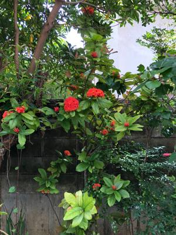

うるがいの話 ある日
最新:
老人
うるがいとは 前提知識です
カニの画像をクリックすると『うるがいの話』サイトを表示します

うるがい(ｳﾙｶﾞｲ urugai)とは、『もずくがに』の名前でとても大きくなります。

たながー（ﾀﾅｶﾞｰtanagaa）とは手長えびのことで、何種類かあり大きいのは車
エビぐらいになります。

ぶながー(bunagaa)とは、赤い髪の毛、赤い身体、そして身長は１ｍ２０ｃｍ
ぐらい、川の蟹を食べているの目撃された。場所は沖縄県国頭郡大宜味村のと
ある村僕の隣近所に住んでいる爺さんから、聞いた話です。
2021年07月03日 (土）老人
22:28

８１歳になる落語家柳家小三治の「止まらない男 噺(はなし)家 柳家小三治」
をドキュメントをみる。コロナ禍で落語家も苦労していることが分かる、どの
職業でも多かれ少なかれ、影響を受けている。小三治さんが、「老人なんだよ
な」と自部自身に言っている、確かに老けている。体もボロボロのようだ、リ
ウマチのため、自分でお腹に注射を打つシーンもある。ん！、私も８０歳にな
るまで生きていたら、・・・。この前、いま９１歳のゴルバチョフのＢＳ世界
のドキュメンタリー「ゴルバチョフ 老政治家の“遺言”」をみた。イスから立
上がるのも大変だった。おととい、登録してある
ダライラマのツイッター
に
映像があった。多少老けているが元気で、相変わらずくチャメッケがあってい
い。映画の公開に合わせたもう一人のノーベル平和賞受賞者であるデズモンド
ツツ大司教（今回初めて知った）とのユーモアのある会話、ダライラマが司教
に向かって
あなたは、死後、天国に行く準備ができました。キリスト教によると、私は信
者ではありません。だからダライラマ、別の場所に行く（二人とも笑う）
もし長生きできたら、このような老人になりたい。
なお、二人の会話の日本語訳が、まだネットで検索できなかったので私がグー
グルの翻訳も使い、二人の写真の画像リンクに日本語訳を載せている。